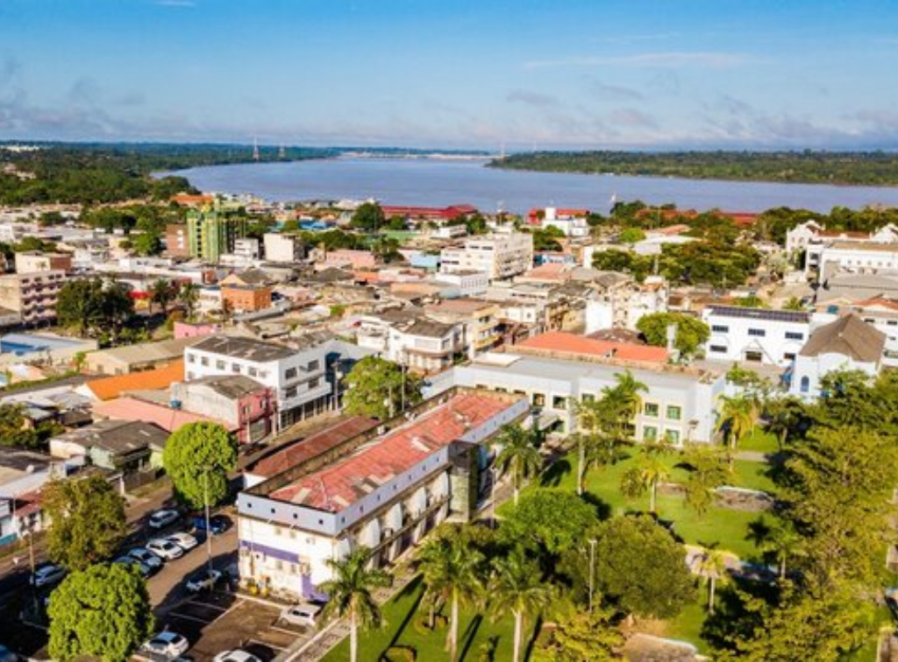

Rondônia é um estado localizado na Região Norte do Brasil, fazendo fronteira com a Bolívia e com os estados do Amazonas, Mato Grosso e Acre. Sua capital é Porto Velho. Grande parte do território de Rondônia é coberta pela Floresta Amazônica, apresentando clima equatorial, quente e úmido durante a maior parte do ano. O estado possui importantes rios, como o Rio Madeira, que exerce grande influência na economia e no transporte da região. A economia de Rondônia é baseada principalmente na agropecuária, na agricultura, na mineração e na geração de energia elétrica. O estado destaca-se na produção de café, soja, milho e carne bovina. Além disso, as usinas hidrelétricas construídas no Rio Madeira têm grande importância para a produção de energia no Brasil.
